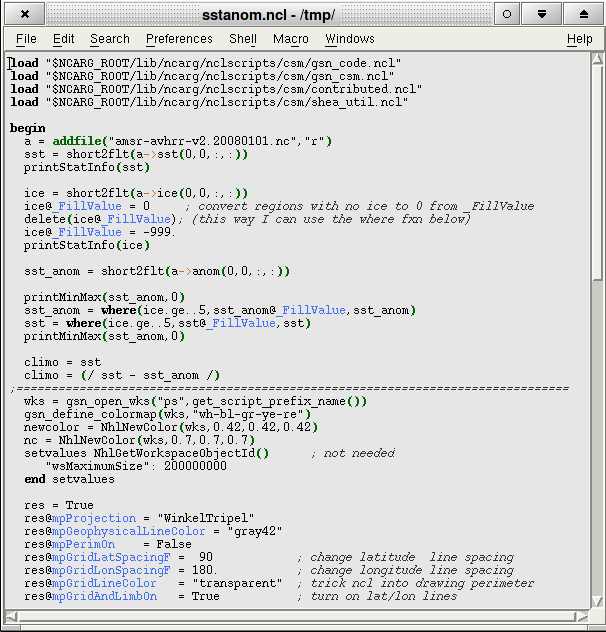
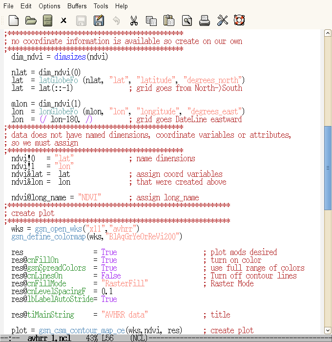
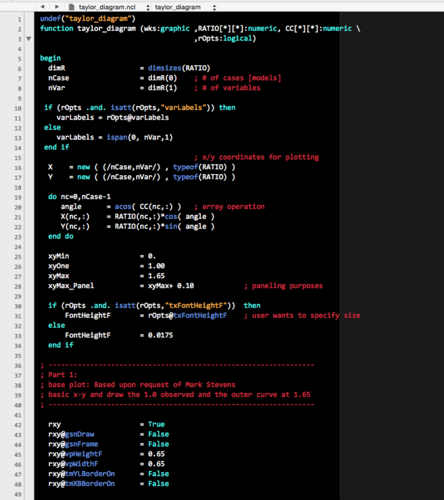
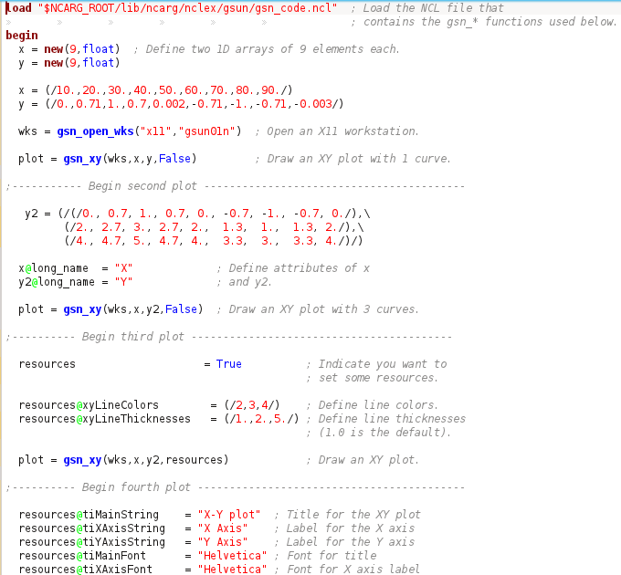
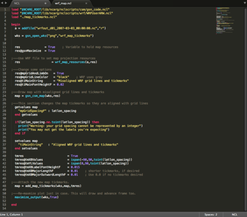
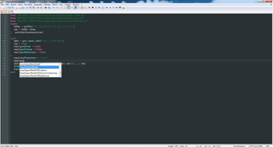
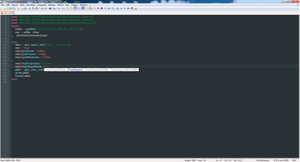
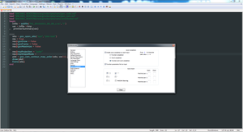
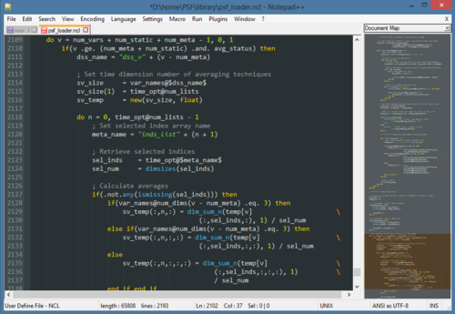

NCL Home>
Application examples>
Miscellaneous ||
Data files for some examples
Example pages containing:
tips |
resources |
functions/procedures
NCL: Editor enhancements for use with NCL scripts

This page contains some handy scripts for customizing various editors
to do special highlighting of NCL syntax. They were documented and
contributed by other users.
Note that the NCL developers have not tested every one of these
scripts, so use these at your own discretion.
These editor scripts are not necessarily supported by the NCL team,
but we greatly appreciate and encourage these kind of contributions.
These are listed alphabetically:
In order to help create your own editor enhancements, you can use the
functions
in gen_editor_utils.ncl to
create lists of all the NCL functions/procedures, keywords, operators,
and/or resource names. See the comments at the top.
If you have an editor enhancement contribution for NCL, send
email to ncl-talk.
GNU Emacs

Functionality includes:
- Indents two spaces between "begin" and "end" statments
- Indents two spaces within "do" loops and "if" statments
- Comment handling (M-;)
- insert a comment at the end of the current line
- Alternatively comment/uncomment selected region
- Highlighting (chose your
colors)
Issues that remain
- Comment Handling does not work in xemacs
- Comments may not fontify on file open in xemacs
Controlling your emacs window:
Add and modify the following to your .Xdefaults if desired:
Emacs.geometry: 80x38+250+10
Emacs*background: antique white
Emacs*foreground: black
Emacs.pane.menubar.background: peachpuff
Emacs.menu*.background: peachpuff
Emacs.cursorColor: red3
Emacs.font: 10x20
Emacs.pane.menubar.font: 10x20
Steps
- Download the ncl.el file and put it on
your system.
- Put the following text in your .emacs file: (note, if you do not
like the specified colors, you can change them here or not include this portion in
your .emacs file)
(setq auto-mode-alist (cons '("\.ncl$" . ncl-mode) auto-mode-alist))
; this line associates ncl-mode with the lisp package that defines it.
(autoload 'ncl-mode "~/bin/ncl.el")
; a hook is a list of functions that get executed under certain
; conditions.
(add-hook 'ncl-mode-hook
(lambda () ; lambda is an anonymous function. e.g. has no name.
; highlight comments
(set-face-foreground font-lock-comment-face "FireBrick")
; highlight strings
(set-face-foreground font-lock-string-face "Salmon")
; highlight keywords, array descriptors, and tests
(set-face-foreground font-lock-keyword-face "Purple")
; highlight built-in functions
(set-face-foreground font-lock-builtin-face "Blue")
; highlight gsn* functions
(set-face-foreground font-lock-variable-name-face "SteelBlue")
; highlight shea_util and contributed functions
(set-face-foreground font-lock-function-name-face "CadetBlue")
; highlight resources
(set-face-foreground font-lock-constant-face "ForestGreen")
)
)
Change ~/bin/ncl.el to the location of YOUR ncl.el file
Modify the ncl.el code as necessary to include functions or keywords
not specifically listed
The Emacs NCL mode was first implemented by Sylvia Murphy at NCAR. Updates
have been provided by Heiko Klein of Norway, Carl Schreck and Alan Srock of the
University at Albany (SUNY), and Thierry Corti of ETH in Zurich, Switzerland.
NEdit
Various files for NEdit:
ncl.nedit /
ncl2.nedit /
ncl3.nedit
The following scripts enable NCL syntax highlighting in NEdit versions
5.1.0 and higher. The scripts range from a minimalistic approach with
few highlighting schemes and few colors, to a more thorough
highlighting scheme with many colors. The scripts can be downloaded
and, if desired, edited and tested. When ready you can import
the file into NEdit by typing, for example:
nedit -import ncl.edit
You will only have to import the file once. Go to "Preferences"
and click on "Save Defaults".
- ncl.nedit -a minimalistic approach,
keywords and flow constructs are in bold-black, comments are plain-red
and symbols are highlighted in bold-blue (courtesy of Dennis Shea)
- ncl2.nedit - a more moderate
highlighting scheme that highlights attributes, I/O functions (among
others) (courtesy of Adam Phillips)
- ncl3.nedit - an intensive syntax
highlighting approach that highlights most NCL functions (courtesy of
Paul Thomas Quelet). Updated periodically by volunteers to reflect new
syntax or functions.
vi/vim
Several people have included enhancements for the VI/VIM editor. We've tried
to include as many as we can so you have a choice of which one to use.
Steps:
- Download the desired .vim file [naming it ncl.vim] and put it in
your .vim/syntax directory
- Put the following two lines in your .vimrc file
au BufRead,BufNewFile *.ncl set filetype=ncl
au! Syntax newlang source $VIM/ncl.vim
If things do not appear to be working, then add a third line to the .vimrc file:
syntax on
- ncl1.vim -a simple approach
(courtesy of Kevin Mueller [UIUC])
- ncl2.vim - extensive highlighting of
functions through v5.0.0 with some v5.1.0 functions
included. (Courtesy of Arindam Chakraborty [Indian Institute of
Science].)
- ncl3.vim - includes highlighting of
resources and additional new functions. (Courtesy of Carl Schreck.)
Carl wrote
this gen_vim_syntax.ncl script
to make the ncl3.vim file. This loads a script named
gen_editor_utils.ncl
- https://github.com/xiexinyls/vim
- includes indentation for "do" and "if" statements in NCL (Courtesy
of Xin Xie [School of Marine and Atmospheric Sciencs, Stony Brook
University].
Be sure to download the whole directory structure. If you have git,
you can also go to your home directory and type:
git clone https://github.com/xiexinyls/vim ./.vim
- The following was donated by Prince K. Xavier [Laboratoire de
Meteorologie Dynamique, France].
I experimented a bit with the VIM to include an auto-completion option for
NCL commands. I think I have some good news for those who do not want to
remember all the commands or consult the website often while writing a
script! I find it particularly useful! Here is what you have to do.
- Save ncl.dic to ~/.vim/dictionary/
(I took the commands from the ncl syntax file compiled by Arindam
Chakraborty. I am not sure how complete this list is, but one can always
add entries to this file.)
- Make the following entries to your .gvimrc
"Show autocomplete menus.
set complete-=k complete+=k " Add dictionary search (as per dictionary option)
set wildmode=list:full
set wildmenu
au BufRead,BufNewFile *.ncl set dictionary=~/.vim/dictionary/ncl.dic
- Open your .ncl file and start typing the first letter of the
command/resource/function name and press 'control+n' and choose your
option.
Here is a screenshot of my editor
that works great!
- Aaron Spring [Max Planck Institute for Meteorology, Germany] has made his VIM editor
enhancement available as an open-source project. Its features include:
JED
The ncl.slscript was contributed by TJ
Olney of Western Washington University, for use with John E
Davis's JED editor.
The latest version (June 1, 2011) has been updated to work with NCL
V6.0.0, and should be used with version 99.19 of jed.
JED is a freely available text editor for Unix, VMS, MSDOS, OS/2,
BeOS, QNX, and win9X/NT platforms. Although it is a powerful editor
designed for use by programmers, its drop-down menu facility make it
one of the friendliest text editors around. Hence it is ideal for
composing simple email messages as well as editing complex programs in
a variety of computer languages.
JED makes extensive use of the S-Lang library, which endows it with a
powerful S-Lang macro language. This and other features of the library
are discussed on the features page.
To incorporate this syntax in your JED environment, add the lines from
the ncl.sl to your "defaults.sl" or "jed.rc"
(.jedrc) file. The instructions are also in the file.
TextMate
The NCL.tmbundle.zip script was
contributed by Ryan Pavlick.
To install the file, unzip the "NCL.tmbundle.zip" file, double click
"NCL.tmbundle", and restart TextMate if it is open. If that doesn't
work, try opening a Terminal window and enter the following two
commands:
mkdir -p ~/Library/Application\ Support/TextMate/Bundles/
cp NCL.tmbundle ~/Library/Application\ Support/TextMate/Bundles/
then restart TextMate.
gedit
This configuration was contributed by Chad Herman. The "ncl.lang" file
in the ncl_gedit_xml.tgz tarball
was updated September 2017 to recognize new functions/resources
added through NCL V6.4.0.
To install, unwrap
the ncl_gedit_xml.tgz tarball in
some convenient directory, cd into the ncl_gedit_xml
directory and run the install.sh bash script as follows:
# Install for gedit 2.x
./install.sh 2
# Install for gedit 3.x
./install.sh 3
The tarball and ncl_gedit_xml directory can be deleted
after the installation.
Chad writes:
Gedit should now recognise and highlight your *.ncl files. If you
start gedit in the terminal, you'll see a *warning*:
(gedit:6532): GtkSourceView-WARNING **: Cannot create a regex for all the
transitions, the syntax highlighting process will be slower than usual.
The error was: Error while compiling regular expression ...
This is nothing to worry about. This started showing up after I added
all of
the "resource" names (all 1,452 of them). NCL is a big language!
For MacOS X users with an official binary of
gedit, Rob Nicholas of the Dept. of
Geosciences at Penn State University advises:
...for those of you using the official Mac OS X binary for gedit,
you'll need to change line 57 of the install script to:
sudo cp ncl.lang \
/Applications/gedit.app/Contents/Resources/share/gtksourceview-2.0/language-specs
Rob further notes that this does not apply to users who obtained gedit
through Fink or MacPorts.
Aquamacs
The ncl.el editor enhancement
for Aquamacs was contributed by
Luis C. Cana Cascallar of the Universidad de Las Palmas de Gran
Canaria.
Aquamacs NCL mode screenshot
Aquamacs (see
http://aquamacs.org)
is a free editor based on the GNU Emacs but with a deep integration in
Mac OSX. These are the steps following some recommendations of David
Reiter, the main developer and maintainer of Aquamacs:
- Download ncl.el file (the same for
Emacs) and put it on the system.
David Reiter's suggestion: /YOUR-HOME-DIRECTORY/Library/Application
Support/Aquamacs Emacs
- Add the following piece of code in
/YOUR-HOME-DIRECTORY/Library/Preferences/Aquamacs Emacs/Preferences.el
;=======================
(setq auto-mode-alist (cons '("\.ncl$" . ncl-mode) auto-mode-alist))
; This line associates ncl-mode with the lisp package that defines it.
(autoload 'ncl-mode "/YOUR-HOME-DIRECTORY/Library/Application Support/Aquamacs Emacs/ncl.el") ; <<<<<<<< pointing to the right place
; a hook is a list of functions that get executed under certain
; conditions.
(add-hook 'ncl-mode-hook
(lambda () ; lambda is an anonymous function. e.g. has no name.
; highlight comments
(set-face-foreground font-lock-comment-face "FireBrick")
; highlight strings
(set-face-foreground font-lock-string-face "Salmon")
; highlight keywords, array descriptors, and tests
(set-face-foreground font-lock-keyword-face "Purple")
; highlight built-in functions
(set-face-foreground font-lock-builtin-face "Blue")
; highlight gsn* functions
(set-face-foreground font-lock-variable-name-face "SteelBlue")
; highlight shea_util and contributed functions
(set-face-foreground font-lock-function-name-face "CadetBlue")
; highlight resources
(set-face-foreground font-lock-constant-face "ForestGreen")
)
)
;====================================
And that's all!
If there is any problem, one should check first which is the Major Mode:
Mode Line (at bottom of screen).
M-x ncl-mode RET will enter the mode manually
Another possibility is just adding to the FIRST LINE of the ncl script
this single line:
; -*- mode: ncl;-*-
This trick switches the mode to NCL.
NetBeans
Robert Redl wrote
a NetBeans
plugin that supports NCL script development. It features:
- Syntax highlighting and checking.
- Code completion for all NCL procedures functions and resources:
type the first few letters followed by CTRL-SPACE to get a list of
all procedures/functions/resources that begin with those
letters.
- Displays online documentation in conjunction with code completion.
- NCL project management: develop, manage and run ncl scripts from
within the NetBeans IDE.

Netbeans is freely available for Unix/Linux, MacOS X, and Windows
machines. See the NetBeans site for more information.
TextWrangler
- a text editor for the Mac.
(Click on image for a slightly larger view.)

The NCL.plist editor enhancement
for TextWrangler
was originally contributed by Emilie Vanvyve of NCAR and enhanced by
Charles Bardeen of NCAR to support generating a pull down list of
functions and procedures.
Alan Brammer has continually updated and enhanced this module.
Functions and procedures can now be "folded" and the "Reveal start"
and "Reveal end" menu items now work. Alan put some simple code to
generate this, as well as some documentation and examples up on
bitbucket:
https://bitbucket.org/a1brammer/textwrangler_ncl_clm/wiki/Home
Move the NCL.plist to either:
~/Library/Application\ Support/TextWrangler/Language\ Modules/
or
/Library/Application\ Support/TextWrangler/Language\ Modules/
If TextWrangler is open, quit and restart the application.
Kate

The ncl_kate.xml.txt editor enhancement
for Kate was contributed by Raul
Valenzuela, a graduate student in the Atmospheric and Oceanic Sciences
Program at the University of Colorado. It highlights NCL keywords,
functions, contributed functions, gsn_code functions,
gsn_csm_functions, comments, strings, and metadata markers (@, !, &).
Rename the "ncl_kate.xml.txt" file to "ncl.xml", and put it in the
system /usr/share/kde4/apps/katepart/syntax directory, or you can use
the following shell script that installs the file in the user's kde
"data" directory. Thanks to Stephen Dowdy of NCAR/RAL for this script:
#!/bin/sh
kde_data="$(kde4-config --path data 2>/dev/null | cut -d: -f1)"
kde_data="${kde_data:-${HOME}/.kde/share/apps}" # punt to well-known location
kate_syntax="${kde_data}/katepart/syntax/"
[ ! -d "${kate_syntax}" ] && mkdir -p "${kate_syntax}"
curl -o "${kate_syntax}/ncl.xml" http://www.ncl.ucar.edu/Applications/Files/ncl.xml
SublimeText
Dr. Li Dong of the Institute of Atmospheric Physics at the Chinese
Academy of Sciences contributed
a Sublime Text package for
use with NCL. Sublime Text is billed as "a sophisticated text
editor for code, markup and prose". Full instructions can be
found here.
[Click on image for larger view.]

Notepad++
Two users have contributed complementary enhancement files to work
with the Notepad++ editor.
The first file provides auto-completion
capabilities, and the second file provides
syntax highlighting with color.
Auto-completion
Dr. Ma Xinye and Ge Hui, from the School of Atmospherical Sciences,
Nanjing University, China (worldwindmxy@gmail.com), contributed
the NCL_notepad.xml.txt file,
which is based on the script supplied by Dr. Li Dong who is also the
contributor of Sublime Text's enhancement
for NCL.
This file has been updated for NCL version 6.3.0 and can work for
notepad++ v6.7.8. It provides auto-completion for NCL, including
functions/procedures, graphical resources, and resource codes.
Follow these steps to achieve the function of auto-completion for notepad++:
- Download the NCL_notepad.xml.txt
file, rename it to "NCL.xml", and put it into the correct position, for
example "D:\Program Files\Notepad++\plugins\APIs\", and you will also
find there are many other ".xml" files there.
- From the menu bar, select Settings -> Preferences -> Auto-Completion
- Check the "Enable auto-completion on each input", "Function and
word completion", "Function parameters hint on input", "()",""
- Restart notepad++
The contributors have stated you can contact them directly with questions,
worldwindmxy@gmail.com.
[Click on images for larger view.]



Syntax highlighting
Brian Vanderwende, a PhD student at the University of Colorado
Boulder, contributed syntax highlighting files for two of the included
color schemes (Default and Obsidian).
To add the schemes to Notepad++, the user simply needs to download the
npp_ncl_default.xml and
npp_ncl_obsidian.xml to
their hard drive, and then import them in N++. Be sure to save the
files without the ".txt" extension.
Follow these steps to import these schemes in N++:
- From the menu bar select Language -> Define Your Language
- Click the Import... button
- Select the XML file you'd like to use on the disk
- Restart Notepad++
From this point, any .ncl file you open should have the highlighting
enabled. It recognizes NCL 6.2.0 keywords and all functions included
in the nclscripts folder. Note that the formatting uses UDL2, which is
only available in versions 6.2 and up of Notepad++.
Below is a screenshot of the dark Obsidian theme.
[Click on image for larger view.]

Atom
Ryan Pavlick (Jet Propulsion Laboratory) and Ben Schroeter
(University of Tasmania) have contributed different NCL packages
for Atom.
Package #1 - Ryan Pavlick
This package is based on Li Dong's Sublime
Text's enhancement package and provides syntax highlighting,
autocompletion, and some useful code snippets for NCL.
https://atom.io/packages/language-ncl
Installation is straightforward for Atom users, either:
Enter `apm install language-ncl` at the command line.
OR
Search for `language-ncl` in the Atom package manager and click the
install button.
Package #2 - Ryan Pavlick
This package allows users to run an NCL script or a selection
from an NCL script directly from their Atom editor.
Instructions for installing and using the package are here:
https://github.com/rgbkrk/atom-script
To use it with NCL scripts, you need to:
- make sure you have language-ncl package installed:
https://github.com/rpavlick/language-ncl
- start atom from the terminal (mostly likely you will want to be in
the directory where your NCL script resides)
It should work for MacOS X, Linux, and potentially Windows.
Package #3 - Ben Schroeter
This package autocompletes NCL:
https://atom.io/packages/atom-autocomplete-ncl
There are two ways to install the package:
- Via the Atom Editor itself
Atom > Preferences > Install > Search "atom-autocomplete-ncl" > Install
- Via the APM command line utility
apm install atom-autocomplete-ncl
Completions are automatically generated from the NCL documentation
website, so as new major NCL releases come out, Ben said he would
update the package.
{kind=link}
{kind=link}
{kind=link}
{kind=link}
{kind=link}
{kind=link}
{kind=link}
{kind=link}
{kind=link}
{kind=link}
{kind=link}